COMFORTABLE ROOMS
Clean beds, cool air, working televisions, solid walls, and hot showers. A good night’s sleep makes all the difference.
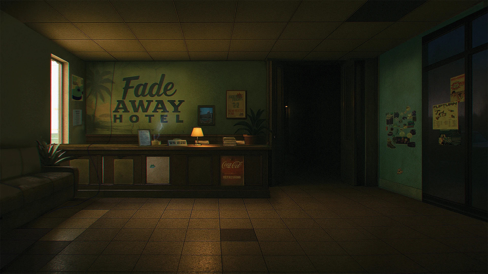
Tucked just between the city’s edge and Rizal’s Sierra Madre mountains, the Fade Away Hotel has been welcoming travelers for generations. Whether you’ve been on the road for days or years, Fade Away offers a place to rest, refuel, and remember what it feels like to stay awhile.
From warm meals to quiet rooms, this is the kind of stop you didn’t know you were looking for—until you found it!
Clean beds, cool air, working televisions, solid walls, and hot showers. A good night’s sleep makes all the difference.
Hot meals served daily! Local recipes, familiar flavors, and satisfying portions meant to fill you up after that long hike.
A rotating selection of classics and long-forgotten tracks. Pick a song. Sit down and let it play.
Our centerpiece! Cool off, and meet other travelers, or just sit by the water. Recently renovated and well-maintained.
Open views, fresh air, and space to think. Majestic views of both Metro Manila and the Sierra Madre mountains!
Hikers, weekend warriors, solo travelers, and long-haulers all pass through here. Be prepared to socialize!
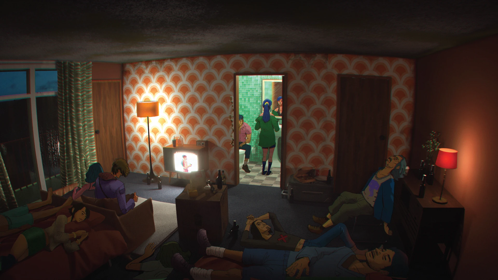
I drove most of the afternoon, hugging the old service roads that run south of what used to be the metro. No signage out here. No working gas stations. Just long stretches of cracked pavement and the occasional skeleton of a billboard, advertising to no one. You don’t stumble on the Fade Away—you have to know it’s there. After the last bend, it just... appears. A solitary and imposing neon sign propped up against the dusk. I parked in the gravel lot out front. The lights in the reception window were already on.
There’s no check-in process and strangely, no receptionist. Just a taped sign that reads: LEAVE PAYMENT and WAIT.
I slid a few bills on the desk—enough for a small room, probably. Lit a cigarette and waited outside. A couple of minutes later, I heard footsteps and the sound of drawers opening. When I came back, a single brass key with a red tag sat atop the reception desk: Room 6.
The hallway lights were working—dim and old, but steady. I passed the bar on the way up. No bartender. The stools were all there, but in disarray. Bottles long gone. The performer’s stage lit by a single spotlight, as if waiting for someone to step out from behind the curtain.
Room 6 was clean. Sparse. Concrete walls covered in vintage wallpaper. The AC hummed softly from a unit mounted above the window. A curtain pulled tight against the dusk. There was an old TV set that worked, but no channels were running—I had no reason to turn it on. No telephone. Just a mirror, a nightstand, and a power outlet that buzzed a bit when I plugged in my laptop. The sheets were crisp. Someone—or something—keeps this place running.
Dinner was whatever I was able to purchase from a roadside caravan a few 40 kms back: An assortment of bottled preserves, stale bread, a warm bottle of water. The restaurant here shut down a long time ago, like everything else after the Silence. The closest restaurant was 3 hours away so guests are expected to bring their own food.
Around 9, I went for a walk. The pool was dry but eerily pristine, like it hadn’t been used in years—but hadn’t decayed either. The laundromat still worked, though no one was there. Someone had left clothes spinning, at least giving a sense of life to the empty place.
I met a group hanging outside Room 13. A mixed bunch, drawn here by the legendary mystique of the motel. They came with an overflowing supply of beer and pizza. One last party before exploring the void, I guess.
Aice, was a veteran explorer of the city and is very familiar of the motel’s history.
“The motel’s a bit far from the usual entry point into the city,” he said. “You’ve got to take a detour—it adds maybe 30 or 40 kilometers to the trip. It’s a hassle, especially with how bad the roads are. But I’ve come to love the place. So I always include it in the itinerary.”
“This place wasn’t always this quiet,” he continued. “Back before the Great Silence, the motel was a last-minute kind of spot—wrong turns, trysts, afterparties that got out of hand. No one actually plans to come here, but you end up here if you want the party to never end.”
“We accidentally found this place more than a decade ago. My buddies and I lost our jobs thanks to some brilliant government fuckery. So we drove out of the city that night and ended up here. Best layoff of my life. Haha.”
Aice then veered into stories from his party days in the city before the Great Silence—which probably warrant an article of their own.
Mickey, a newbie explorer, chimed in—her voice bright and curious, untouched by the weight the others carried.
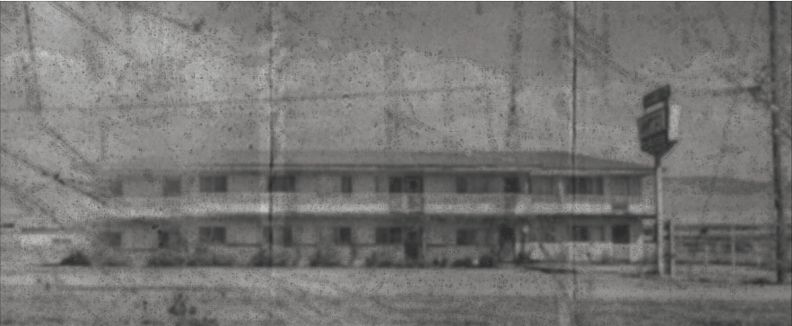
“I still can’t believe this place is real,” she said. “I used to read stories about the Fade Away on old forums. You know, the ones that looked abandoned but somehow still had active comment sections?”
“There’s this user, papa_w1ns—they posted a full floorplan and photos of the motel back in 2012. It matches perfectly. Even the busted vending machine is still busted!” Mickey laughed. “The graffiti outside? Already there in those photos. Which is fucking prophetic. No one could’ve predicted that. I joined this trip specifically to see that tag. In person, it’s nothing special, but if you know the history, it’s full-on Nostradamus shit. Props to the artist.”
I stuck around the party a bit. Got myself a few free beers and a supplemental slice of pizza to top off my humble dinner.
There was a lot of buzz about the trip into the city tomorrow. A few people hung out by the empty pool, lighting a bonfire with other guests. Others climbed to the roof, hoping to catch a glimpse of the ruins.
There are no rules here. But there’s a strange order. Everyone cleans up. No one steals and no one dares trash the place. Maybe it’s because no one wants to be the one to break this sole reminder of the old world.
Back in my room, the AC cooled the space into something quiet and almost clean. I lay on the bed, wide awake. The silence was occasionally broken by laughter outside, then faded into stillness. I left the window cracked, letting the hum of the compressor lull me to sleep.
In the morning, I passed by Room 13. I meant to say goodbye, but it seemed they were still out cold from the night before.
I bumped into a couple from the room next door who were already up—they gave me a quick nod. I dropped the key back in the reception desk. Still no one there.
Then it was on to the car. Just the soft crunch of gravel under my tires as I pulled away.
The road ahead was empty. Very few people dare venture into the old city anymore— except for these daring outliers and their fancy masks, chasing the next adrenaline rush. The world felt a little more distant than it did yesterday.
The Fade Away stayed behind me—quiet, comfortingly intact, exactly as I found it.
No one is meant to stay here.
But for one night, it feels like you could.
I slid a few bills on the desk—enough for a small room, probably. Lit a cigarette and waited outside. A couple of minutes later, I heard footsteps and the sound of drawers opening. When I came back, a single brass key with a red tag sat atop the reception desk: Room 6.
The hallway lights were working—dim and old, but steady. I passed the bar on the way up. No bartender. The stools were all there, but in disarray. Bottles long gone. The performer’s stage lit by a single spotlight, as if waiting for someone to step out from behind the curtain.
Room 6 was clean. Sparse. Concrete walls covered in vintage wallpaper. The AC hummed softly from a unit mounted above the window. A curtain pulled tight against the dusk. There was an old TV set that worked, but no channels were running—I had no reason to turn it on. No telephone. Just a mirror, a nightstand, and a power outlet that buzzed a bit when I plugged in my laptop. The sheets were crisp. Someone—or something—keeps this place running.
Dinner was whatever I was able to purchase from a roadside caravan a few 40 kms back: An assortment of bottled preserves, stale bread, a warm bottle of water. The restaurant here shut down a long time ago, like everything else after the Silence. The closest restaurant was 3 hours away so guests are expected to bring their own food.
Around 9, I went for a walk. The pool was dry but eerily pristine, like it hadn’t been used in years—but hadn’t decayed either. The laundromat still worked, though no one was there. Someone had left clothes spinning, at least giving a sense of life to the empty place.
I met a group hanging outside Room 13. A mixed bunch, drawn here by the legendary mystique of the motel. They came with an overflowing supply of beer and pizza. One last party before exploring the void, I guess.
Aice, was a veteran explorer of the city and is very familiar of the motel’s history.
“The motel’s a bit far from the usual entry point into the city,” he said. “You’ve got to take a detour—it adds maybe 30 or 40 kilometers to the trip. It’s a hassle, especially with how bad the roads are. But I’ve come to love the place. So I always include it in the itinerary.”
“This place wasn’t always this quiet,” he continued. “Back before the Great Silence, the motel was a last-minute kind of spot—wrong turns, trysts, afterparties that got out of hand. No one actually plans to come here, but you end up here if you want the party to never end.”
“We accidentally found this place more than a decade ago. My buddies and I lost our jobs thanks to some brilliant government fuckery. So we drove out of the city that night and ended up here. Best layoff of my life. Haha.”
Aice then veered into stories from his party days in the city before the Great Silence—which probably warrant an article of their own.
Mickey, a newbie explorer, chimed in—her voice bright and curious, untouched by the weight the others carried.
“I still can’t believe this place is real,” she said. “I used to read stories about the Fade Away on old forums. You know, the ones that looked abandoned but somehow still had active comment sections?”
“There’s this user, papa_w1ns—they posted a full floorplan and photos of the motel back in 2012. It matches perfectly. Even the busted vending machine is still busted!” Mickey laughed. “The graffiti outside? Already there in those photos. Which is fucking prophetic. No one could’ve predicted that. I joined this trip specifically to see that tag. In person, it’s nothing special, but if you know the history, it’s full-on Nostradamus shit. Props to the artist.”
I stuck around the party a bit. Got myself a few free beers and a supplemental slice of pizza to top off my humble dinner.
There was a lot of buzz about the trip into the city tomorrow. A few people hung out by the empty pool, lighting a bonfire with other guests. Others climbed to the roof, hoping to catch a glimpse of the ruins.
There are no rules here. But there’s a strange order. Everyone cleans up. No one steals and no one dares trash the place. Maybe it’s because no one wants to be the one to break this sole reminder of the old world.
Back in my room, the AC cooled the space into something quiet and almost clean. I lay on the bed, wide awake. The silence was occasionally broken by laughter outside, then faded into stillness. I left the window cracked, letting the hum of the compressor lull me to sleep.
In the morning, I passed by Room 13. I meant to say goodbye, but it seemed they were still out cold from the night before.
I bumped into a couple from the room next door who were already up—they gave me a quick nod. I dropped the key back in the reception desk. Still no one there.
Then it was on to the car. Just the soft crunch of gravel under my tires as I pulled away.
The road ahead was empty. Very few people dare venture into the old city anymore— except for these daring outliers and their fancy masks, chasing the next adrenaline rush. The world felt a little more distant than it did yesterday.
The Fade Away stayed behind me—quiet, comfortingly intact, exactly as I found it.
No one is meant to stay here.
But for one night, it feels like you could.
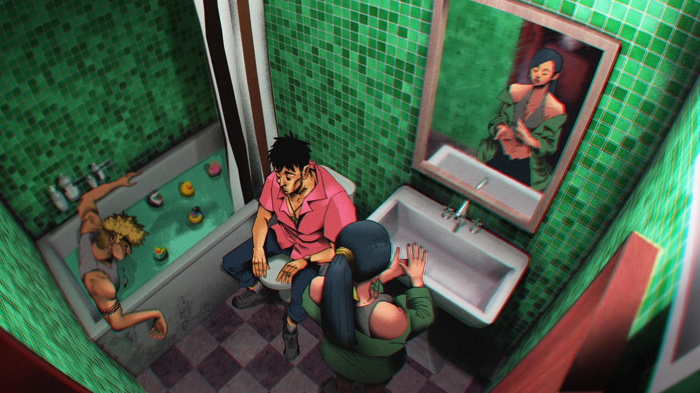
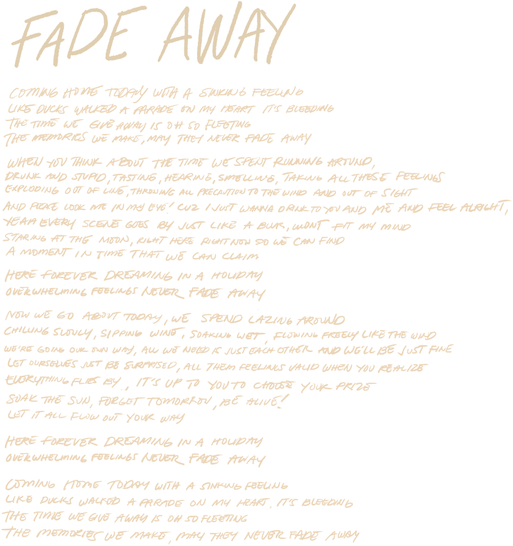
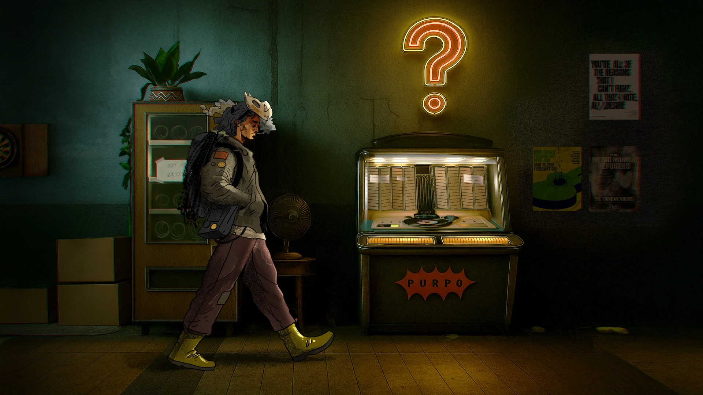
This is a brief excerpt from my conversation with Jeck, an explorer from the south. We talked at the Fade Away Hotel, where he and his group were staying for a few days while preparing to return to the city. The Fade Away Hotel is located in the eastern border of the capital, and Jeck’s group has to pass through numerous singularities to get here.
Can you introduce yourself to our readers?
Im Jeck. I’m an explorer from Lipa. I specialize in climbing, survival, and rescue.
You must’ve taken a while to get here. Can you tell us how you got to the Fade Away Hotel?
We arrived yesterday. I came in with a large group from the South. We skirted the city’s perimeter through the lake, but that route passes too close to the Taguig singularity, so we had to take a detour, and had to go through a lot of rough paranormal shit just to get here.
I don’t think that route’s worth using anymore. I used to think it was possible to approach the business district from that side, but after going over it again, there’s too much risk for too little reward. It took us four days of navigating through the city just to get here.
Why take the risk to come here? Is this where you usually base yourself, or just for now?
It’s actually my first time here. This isn’t on my usual route, since it’s more of a jump-off point for people coming in from the north. I kept hearing from other travelers that a lot of people gather here before heading into the city, and we got curious. It’s also nice to meet explorers coming from the other side.
You can still feel the city’s effects this close in, so I was kind of surprised to see this many people willing to stick around near it.
You carry a bit more than the usual explorer with all that rope and that unusual choice of footwear. Is there a reason for this?
I believe I came from an outdoor background, before all this happened, so I still rely on a lot of those instincts when I’m in the city. Areas closer to the singularities tend to be heavily deteriorated and distorted, and the rope helps with getting through those sections.
The rubber boots are mostly a precaution. Some of the sunken areas are still live somehow, and I don’t feel like getting electrocuted. I also carry a lot of calories. Food’s unreliable once you’re in the distorted zones, and having enough food and water gives you more room to move and think.
Why explore the city, when there’s a high risk of getting incapacitated, or even dying?
The city is the ultimate adventure! Nothing beats the adrenaline of encountering anomalies and going through them, or meeting and interacting with the city’s strange creatures. The views are amazing, and you also get to find a lot of useful objects.
Exploring the city is also helpful in restoring some of my memories. A scene or a series of movements sometimes act as triggers. I remember much about what I did in the past through these sensations. Sometimes I go in looking for equipment. I help my community by looking for stuff that we need that can only be found in the cities.
I love the outdoors, the forests and everything but there’s so much to do in the city that not going feels criminal.
Have you found out anything about the world on your travels?
We probably all came from the city originally. Then one day, because of some event, we all lost our memories and woke up outside it. Now the city’s unlivable, at least according to the few people who still remember. I think there used to be a lot more people. That’s why cities exist at all.
Have you met anyone who actually remembers what it was like before?
There’s one in our community, he’s also an explorer. Anything I know about the world, I mostly learned from him. The most amazing thing he told me was that we people used to live and work our whole lives inside those tall buildings in the cities. Ain’t that something?
If you ever head south, I can introduce you. You might already know him. He runs a small printing press just outside Lucena. You should interview him too.
Yeah, I think I met him before I started this publication. He’s the one who organizes remembrance events and prints all the posters. Pretty opinionated guy. I guess that comes with being someone who actually remembers the past.
Yeah, he’s pretty funny too. The first time I met him, he acted all serious and told me he remembered working with me before the Silence. Said we used to climb together, named a route, even described a fall I supposedly took. I didn’t remember any of it, obviously, but he sounded convincing enough that I figured it was just another gap. Me and my polite, amnesiac ass just didn’t say anything.
He kept it going for weeks. Would bring it up casually, like it was normal, always with a straight face. Then one day, we were out drinking and he admitted he made the whole thing up just to see how long I’d go along with it.
It was funny. Also pretty embarrassing.
Wait, so he’s that kind of joker. He once told me there are areas in the city where, if you get caught inside, you can end up stuck in a loop. Is that actually a real thing?
Yeah, I’ve seen those. There are places where you can actually get stuck in a time loop, doing the same thing over and over. We rescued a pair of explorers once—they were stuck arguing about a pet that didn’t even exist.
What really messed with me was that the effect still went through the mask. The loop effect took a while to really set in, so I was able to run to them and tie them down with a rope. That’s how useful the rope is.
I tied myself down too, so by the time the loop kicked in, my companions were already pulling us back out of the affected area. I don’t actually remember what I was stuck doing, but my friends told me I looked pretty funny.
With all the weird stuff going on inside the city, are your rules written down, or do you keep them in your head?
When I started out four years ago, there wasn’t really a system. I was one of the first people who went back into the city to explore. Back then, we were going in without masks. People were losing it, seeing stranger and stranger things, and some of them just walked straight into the void.
One explorer was worried about running into poisonous gas, so he wore a gas mask. Somehow, he wasn’t affected at all. For a while, we thought it was something in the air. It took a lot of trial and error before we realized the singularities were responding to us directly, and that they recognize people by their faces.
A lot of the rules came from that period. We didn’t write them down. You just kept them in your head if you wanted to make it back out. These days, some of the newer explorers document things and post them on the boards. It’s kind of amazing how detailed it’s gotten. People even track the waves and the weather-like patterns of some of the anomalies. It’s made exploring a lot safer than it used to be.
Do you believe the city remembers people?
I don’t think the city remembers people, but the singularities definitely do. They can create pretty elaborate visions in your head when you’re near them, and sometimes they even call out to you. That’s how I remembered my name. It keeps getting callled back to me.
Do you think we’ll ever return to how things are before the Great Silence?
The Great Silence. Yeah, that’s a pretty apt name for it. But no, I don’t think we’ll ever be the same. For one thing, there are just too few people now. There had to be a lot more of us for cities like these to exist in the first place.
We lost a lot of basic knowledge—how to keep things running, how to organize ourselves. There are only a few people left who actually remember how things work.
Some of that(older knowledge) still applies. Some of it doesn’t. This isn’t the same environment anymore.
Take cars, for example. I’ve noticed a lot more running here in the north, so someone knows how to keep them working. But the roads are in bad shape, and that’s not something one person can fix. You’d need a lot of coordination and expertise for that. People, time, materials. I don’t think we’re there yet.
That’s why it’s good that people like you are collecting stories. Even if nothing else comes out of it, at least it means we’re not forgetting everything.
Do you think you’ll ever stop exploring?
I’m not sure. Maybe if I find enough from the past, it would help me settle down.
Or maybe someday, i’ll just have to accept that this is how things are now and stop looking for answers.
There’s this journal that’s been going around. The one from the guy who went all the way in. He believed that there’s something beyond the void, and he sounded very sure. It kind of stuck with me. Can we explore beyond the singularities? Is that the final frontier?
Honestly I don’t know. Nobody’s come back.
Either way, there’s still a lot to see out there, and as long as that’s true. I’ve got lots to do.
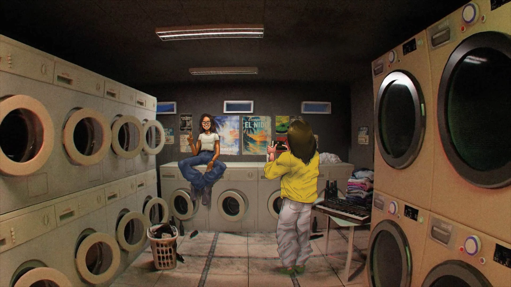
Annika is the featured photographer for this special edition of the magazine. As one of the region’s remaining practicing photographers, her work centers on people—capturing candid moments and ordinary interactions instead of the monumental cityscapes and ruins that usually define our coverage.
She is particularly drawn to the Fade Away Hotel, which serves as a gathering hub for adventurers, explorers, traders, and other travelers operating near the city’s outskirts. Rather than documenting the city itself, her work centers on the social life that forms around it: preparations for departure, informal meetings, and the rituals that are born of repeated journeys and shared waiting.
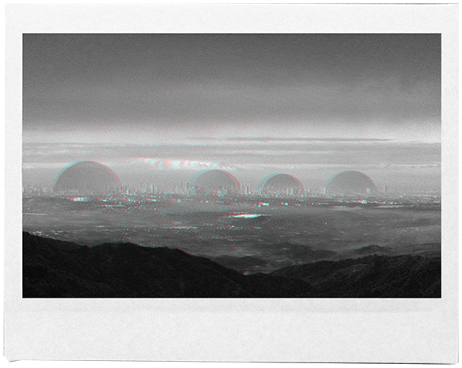
“I took this cityscape from the top of the Fade Away sign. You can see at least four smaller singularities in the city. There’s actually a larger one that contains these four but it’s really faint and is only visible at a certain distance.”
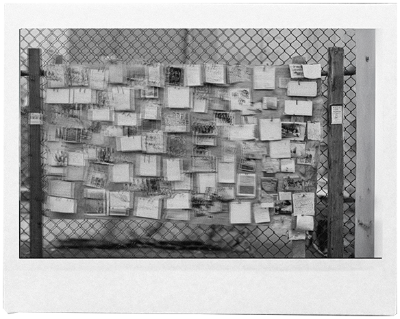
“This is one of the many bulletin boards around the perimeter of the city. People post info here, and some other people grab them and post them online. This was taken from a moving car, we we’re a bit too close to the city and we can feel the buzzing in our heads!”
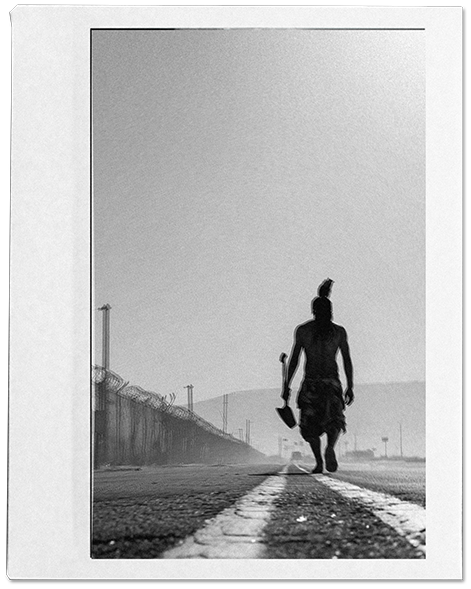
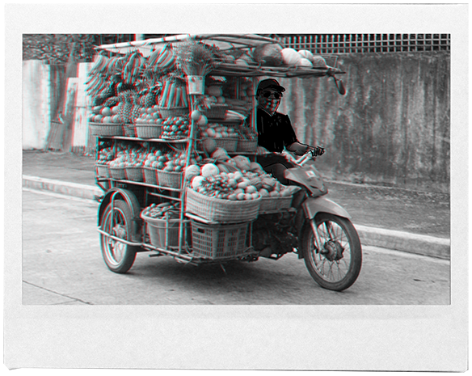
“One of the many mobile talipapas roaming the perimeter of the city. You can buy cheap fruits and veggies from them. They also accept trades with items from inside the city.”
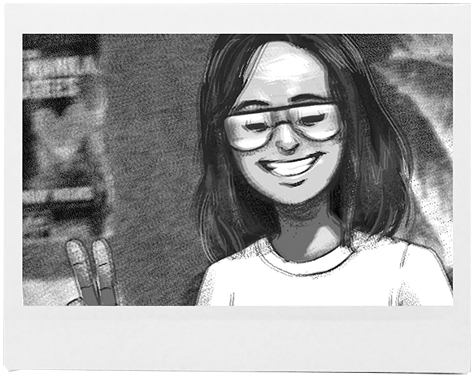
“This is Gari. She drives me around. She’s been to the city three times already and knows the functional in-roads that cut through it. The farthest she’s gone so far is the old Katipunan road in QC. She says she wants to see more of the north next— Caloocan, Malabon. Those places still feel alien to her.”
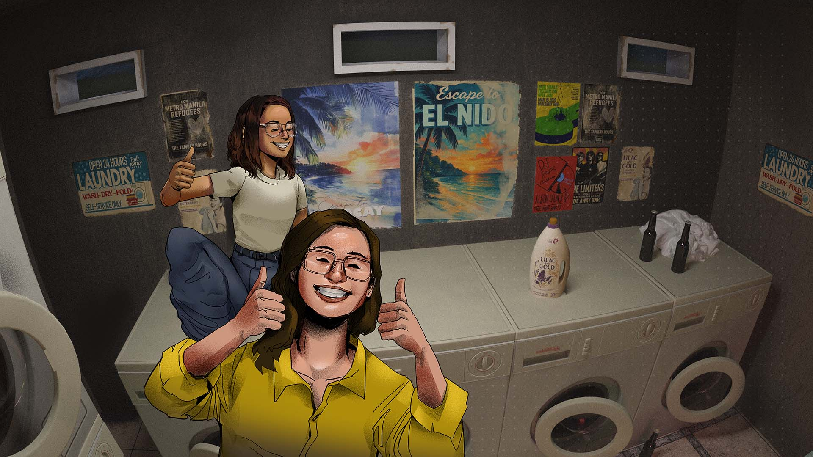
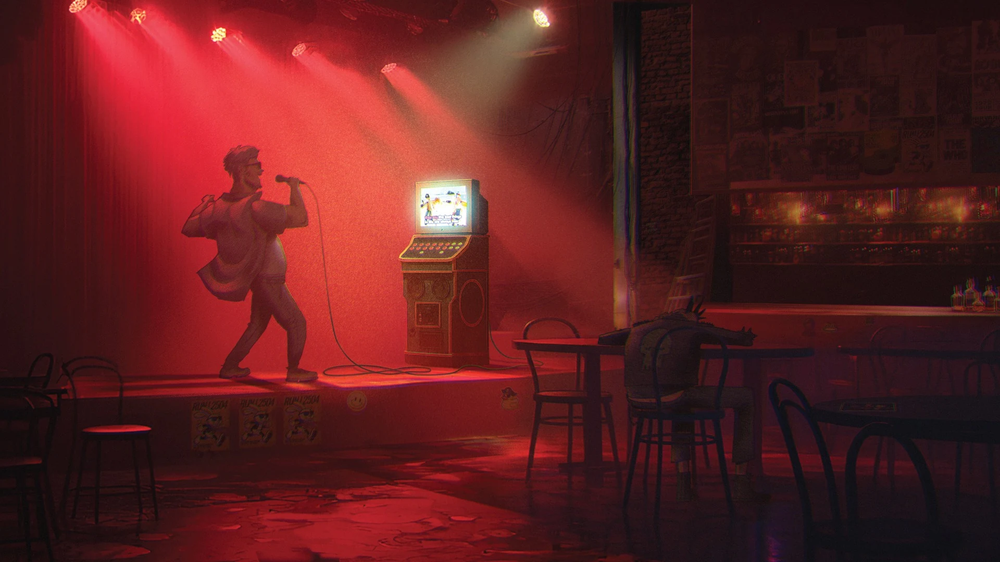
The Fade Away Restaurant and Bar was once a hotspot for the Metro’s hottest bands. With a wide selection of liquor and good food, weekend crowds filled the place. After the Great Silence, the restaurant and bar ceased operations. The venue remains largely functional, standing as a reminder of better days. Now, with virtually no corkage fee and a recently added videoke set on the stage, visitors can live out their rock-and-roll dreams of belting out their favorite songs on the once-popular stage.
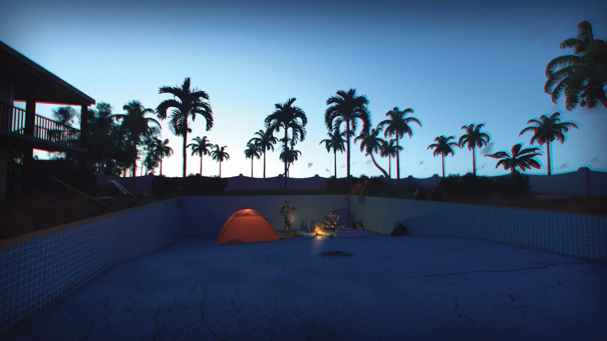
The courtyard pool was the last major addition to the Fade Away Hotel, built in 1995 and renovated as recently as 2015. It met the same fate as the restaurant and bar, eventually falling out of use. Yet the space found a second life in another form. In the early days after the Great Silence, it became a popular camping spot for the more outdoorsy visitors. Today, the drained pool serves as a common gathering place and the usual venue for the Fade Away’s legendary bonfire parties.
In the photo: A group of adventurers gathers at the courtyard pool, planning an early departure to run the Gravity Mile Anomaly along the Old Katipunan Road .
A 1.3-kilometer stretch of road must be crossed in under four minutes and thirty seconds—after which gravity gives out, throwing anyone still on the segment into the air.
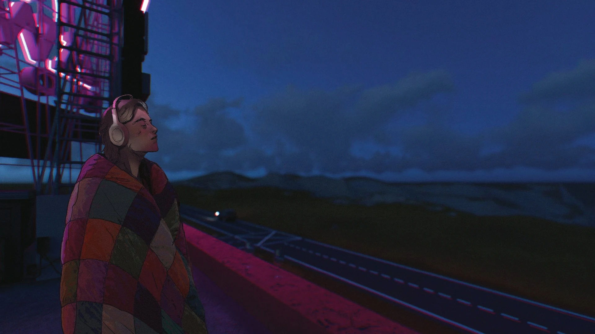
This journal has circulated among explorer communities for some time. References to it appear in travel logs, message boards, and secondhand accounts, often inconsistently. What survives here is a complete transcription of the material as it was recovered.
The author is not identified. Internal references suggest they traveled with a small, semi-permanent group and retained an unusual degree of memory continuity compared to most survivors.
The final journal entries that we feature here are widely believed to be the last written before the author’s disappearance. No confirmed records place them after this point.
The entries were written intermittently, often during periods of rest or enforced waiting. Variations in clarity and consistency have been preserved.
Several passages describe the author’s mental state and observations near singularity zones. The publisher makes no claim regarding the accuracy of these accounts.
Names used in the journal have been altered to protect the identities of individuals referenced by the author.
This journal is published as found.
We scouted another district today.
This part of the city is overgrown with vines now but this used to be a business district with lots of offices. I do remember my time here as an employee, fun times.
I kept trying to line things up in my head but it doesn’t work right anymore. Everything’s out of order and wonky. I tried to guide us at first. That didn’t help. We got kind of lost anyway, so halfway through, I stopped trying.
The big goal this week was to find a working coffee machine, and still no luck today! We did find instant coffee though, and some old cassette tapes.
We set up late tonight, inside the lobby of a big building and made a bonfire. There were a lot of small eyes looking in through the windows. Might’ve been frogs. Might’ve been something else. Rain joked about it and we laughed. I like seeing her smile.
We listened to the tapes while playing cards. One of the albums was something we had when I was a kid, Savage Garden. It was mushy but it brought me back at least.
Kean liked the songs—he felt like he knew them before. Amos was fast asleep, as usual, so we had to end the game.
I think it was a good day.
Day 3 in the business district. Amos and Kean didn’t feel like moving around today. I tried to convince them anyway. Kean was very vocal about not wanting to, so I stopped pushing.
I still wanted to confirm where we were. I kept thinking if I could see it from above, something might click. So I suggested going up one of the buildings. Rain hesitated but came with me.
We usually avoid going up because there’s no power in the stairwells. We brought one flashlight to save on battery—bad idea. The stairwell of this building is kinda cramped, it gets hard to breathe after a while. We talked the whole time so it wouldn’t get quiet. Mostly nothing important. We made it to the rooftop eventually. It took longer than I expected.
The whole city was covered in fog. Just a flat layer of it, stretching out in every direction. So the whole point of going up there didn’t really work. I couldn’t tell where anything was.
I don’t remember the last time I saw clouds like that, from above. It was beautiful, and eerie. I kind of liked it anyway. Rain and I sat there for a while and didn’t say much.
I went out alone today. I wasn’t able to assess how far I went. I don’t think anyone asked, everyone was kinda tired. Amos was napping while blasting music, and Kean didn’t look like he wanted to move anyway. Rain looked like she wanted to come along but changed her mind on the last minute.
I went deeper than I meant to. I kept telling myself I’d turn back after the next block, but I kept finding useful stuff. I got us some cup noodles, and found batteries for the flashlight. I kept walking, and somehow ended up in an anomaly.
I noticed something was off earlier and didn’t pay much attention to it. I think I was bored. Maybe a little reckless. The place bent the shadows in ways that didn’t make sense. I felt it in my jaw, like a dull toothache that wouldn’t go away. It was strange how two unrelated sensations blended into one. It kept urging me to take my mask off. I held onto it tighter and kept moving.
Rain’s voice stayed with me the whole way back. Not anything specific she said. Random phrases. I tried to recall her way of speaking, her tone. Played the voice back in my head over and over.
I somehow ended up from where I entered. I don’t remember reading about that place in the boards. So I recorded the experience and the location then and there.
When I got back, Kean was a bit upset, said he didn’t like it when we split up. He said it calmly. Rain and Amos were a bit worried too and suggested we leave this place.
I told them I wouldn’t do it again.
Finally back in the commune. I was woken up by the noise of another group arriving. I think I slept for almost two days straight. It felt really good.
We had a good breakfast. Kean made this exotic-sounding egg dish with tomato sauce. I always look forward to Kean’s cooking, especially after expeditions.
It’s been a while since there were this many people around, so we organized a game of frisbee. We ended up playing most of the day. Rain kept doing this really funny commentary on the game. We were laughing the whole time because of it.
Dinner was good too. We gathered around the bonfire and played the music we’d found. I especially liked the Land of Pleasure album the other group brought. I don’t remember hearing this band from before the Silence. I’ll try to keep an eye out for more Sticky Fingers albums when I go out.
We talked about playing frisbee again tomorrow. We’ll probably end up doing it all day.
I like these boring days. They make me want to stay here longer.
It’s been raining for days now. The power went out sometime last night. We’re used to outages—having power in this era is more of a bonus—but it still changed the mood.
We stayed inside most of the day, sitting around in the lamplight. Rain and Amos kept joking
the whole time so it wouldn’t get too quiet.
Was greeted with some bad news this morning. The storm still hasn’t stopped, and the commune sits right by the river. If it keeps going, the dam upstream could fail. That’s what the engineer who set up our water system said. We had to open the dam.
I knew it would fall on me. I was the one who mapped that area before. It’s less than twenty kilometers out. Not far, but the storm and flooding would make it harder.
Rain asked if it was safe. I said it should be, as long as we didn’t rush it. I don’t know if that was true.
Kean said he’d come with us. Sef, an explorer from another group, tagged along too. We agreed we’d be back the same day. Amos agreed that the plan made sense.
We left while there was still light.
It took a while, but the engineer was able to open the dam. We didn’t know it would flood the road we came in through.
Once the gates opened, the water moved fast. Faster than I expected. We ran back towards the road, trying to outpace it. In the panic, I left my bag behind in the control room, with this journal in it. I made a dash back for it, but by the time I reached the road again, the current was already too strong.
The engineer told me to wait it out in the control room. He said the water would settle once the levels evened out. I believed him. I had to. I waved them goodbye. The rain was still coming down hard, and they still had a long way to go.
I stayed in the control room. The rain was loud against the concrete. It made it hard to sleep.
I thought about my brother and the last time we talked. I remember we argued. About what, I don’t remember anymore. I thought about my mom too. She’d probably like it here. She’s always been a bit of an adventurer. She’d also scold me a lot for the risky things I’ve been doing.
Then I thought about my girlfriend. I tried to remember her face. Some details felt wrong. I didn’t try to fix it. She said we’d live in the city someday. I still hold on to that. I don’t know if she remembers me. I don’t know if she’s still waiting.
I could feel the water rushing under the floor, and it pulled me back to the present. The commune should be safe for now. The water has somewhere to go.
I’m still stuck here. The rain hasn’t let up, and it might be a while before the water settles.
I ran out of food two days ago. I’m really hungry, and I can’t focus on anything for very long. Writing this down helps a little. It keeps my thoughts from drifting too far.
This doesn’t feel anything like being close to the singularities. Near them, it feels like waking up. All at once. Like a jolt.
There was a time I stood too close to one, without a mask, just to make sense of that feeling. For a moment, it was clear. Like a curtain being lifted. Everything came back. Names. Faces. Memories of certain places sharpened. I remembered where I was supposed to be. What I’ve been doing exactly before I ended up here.
Then my memory of this place pushed back. It felt like the two couldn’t exist at the same time.
I stepped away before it finished. The world went hazy again.
The rain is still coming down. I’ve been in trouble twice this month already. I’m starting to think about what comes after this.
I started walking back once the water dropped enough to cross. I didn’t get very far.
I saw them coming towards me from the other side of the road. Rain first, in her usual fast pace. Kean behind her, then Amos a little farther back. They were soaked.
Rain tossed me a piece of suman as she approached. I ate it all in one bite. She shook her head, pulled another one from her pocket, then dug into her pack, a sweet potato that was still a little warm, and handed them both to me.
Kean said I looked like I’d been thinking too hard instead of eating. I said that was what running out of food does to you.
Amos looked the most worried. He said he was impressed I’d lasted that long without dying of boredom. I think he was trying to lighten the mood.
I told them the road had been worse earlier, with mud settling over the concrete. Kean
said that explained the smell.
Amos took my pack without asking. Rain bumped my shoulder when we started walking back. Not hard.
They said they figured nothing bad was going to happen. Still, it didn’t feel right leaving me out there alone.
We made it back before dark. Kean cooked. We didn’t talk much after dinner. but I didn’t mind. It felt good not having to decide where to go next.
We started moving again today once the weather finally eased up. It’s been a while since we were back in the city. Rain said it felt good to be on the road again. I didn’t feel the same, but I’ll admit I missed the intermitent buzz of the singularities in my head.
Rain had the map, since she liked exploring ahead . Our destination this week is a small gathering spot along the eastern border, just outside Metro Manila. I used to live near there as a child, when it was still all mountains, but I can’t let them know that. We planned to go there to mark our third year together as a group.
Amos counted turns out loud like he always does. It’s a clever countermeasure for the moving anomalies, to make sure we aren’t already inside one without realizing it. Kean walked behind us and kept checking that everyone was still there. It felt normal again.
We had a route planned and a brief window between two shifting anomalies. We were still on schedule.
Then we saw it.
A man-sized cat in a sharp suit, standing in the middle of the street. It noticed us. I don’t know how, but it did.
I’d heard about it from other explorers. Seeing it in person was different. The feeling wasn’t panic. It was something older. We froze where we stood.
The cat split into three. One had a piano. One held a trumpet. One set up drums. The instruments appeared out of thin air and settled naturally under their paws.
It played jazz. Care-free music, but complicated in a way I don’t know how to describe. The kind that sounds like it took a long time to learn. It moved through it easily. I didn’t realize how tense I was until the music started and something in me let go.
We stayed where we were and listened. At some point Kean sat down, so we did too. The cat played for a while. Long enough for time to slip.
When it ended, the three folded back into one. The instruments vanished the same way they appeared. The cat bowed and walked straight through a wall.
I’ve seen a lot of anomalies. This didn’t feel like one of those. It felt pointless. Like a natural feature of this world.
We were quiet for a bit, but Amos couldn’t keep it to himself and said how incredible it was. That turned into a throwback session about the weirdest anomalies we’ve experienced. By then, we’d missed our window, so we had to settle in for the night.
Rain said we could probably push a little farther before dark but I was glad we didn’t.
We reached the Fade Away Hotel today.
It sits on a ridge, just out of view of the city. From the outside, it doesn’t look like much. There are cars and bikes parked on the gravel out front. It makes sense. The roads here are still kind of usable.
The others liked it right away. There are a lot of people gathered here, more than at our commune. Two other groups were leaving as we arrived.
We introduced ourselves. Rain booked us a room on the second floor. We spent some time by the jukebox and played old songs. Amos and Kean were visibly excited.
I didn’t say much.
I used to live here.
Not just near here. This exact building. The room we booked was our old apartment. I still know how the light is supposed to fall in the afternoon. Which window catches the wind. How my mom used to call me through it when dinner was ready, while I played tag with friends in the courtyard below.
But this building has a history I don’t recognize, one I wasn’t a part of.
There are photos in the lobby showing old renovations. The pool in the courtyard that wasn’t supposed to be there. Posters from bands that used to play at the restaurant. Dates. Names. A past that doesn’t line up with mine.
I shuffled around the hallway longer than I needed to.
I tried to explain some of this to Rain. I couldn’t say it directly, or properly. The words didn’t fit together, and I could tell I was just confusing her.
She said, “Or you could just enjoy our stay. You don’t have to think about it too much.”
She meant it kindly.
We spent some time on the rooftop. We ate the adobo we prepared earlier. Down by the empty pool, three groups had merged and turned it into a small party. Music, shouting, laughter. Amos was already down there, flirting. Kean followed soon after.
I stayed back.
Maybe I don’t belong here. Not really.
I looked at Rain. She was leaning against the railing, looking past the lights, like she was already thinking about where we’d go next.
I didn’t tell them I was leaving for good.
The morning was normal. Too normal. Kean was outside with the other group—he’s always asking around for some new recipes to try out. Amos still at his radio, listening to some new CD that he probably traded for last night. I watched Rain as she draws in her journal. Im still curious what she writes in there.
We ate on the hotel steps just to have that sense of being outside. Someone said it felt like a bad vacation. I laughed.
All day I kept thinking about my old life. Not the people, but the shape of it. Waking up for things that mattered. Being expected somewhere. Knowing what the next few years were supposed to be for. Stuff that can be anticipated. A sense of normalcy.
This place is real. I know that now. It has its own history and its own rules. I tried hard to fit in, and make sense of it, and I had fun figuring it out for awhile.
That’s the problem.
I may have enjoyed this temporary trip a little too much, and as much as i hated it, I won’t be able to say goodbye.
I watched them for a while instead. Tried to memorize their faces, their little quirks. The way Amos leans forward awkwardly when he’s excited. The way Kean frowns when he’s about to drop a silly joke. The way Rain looks away when she smile.
If you’re reading this, then I’ve returned to my old life.
I hope you understand why I chose this.
I hope you don’t think it means you mattered less.
You were my life here.
If I forget your faces when I wake up there,
I hope I don’t forget what you gave me.
Thank you for keeping me alive.
Thank you for walking with me.
This is my last entry.
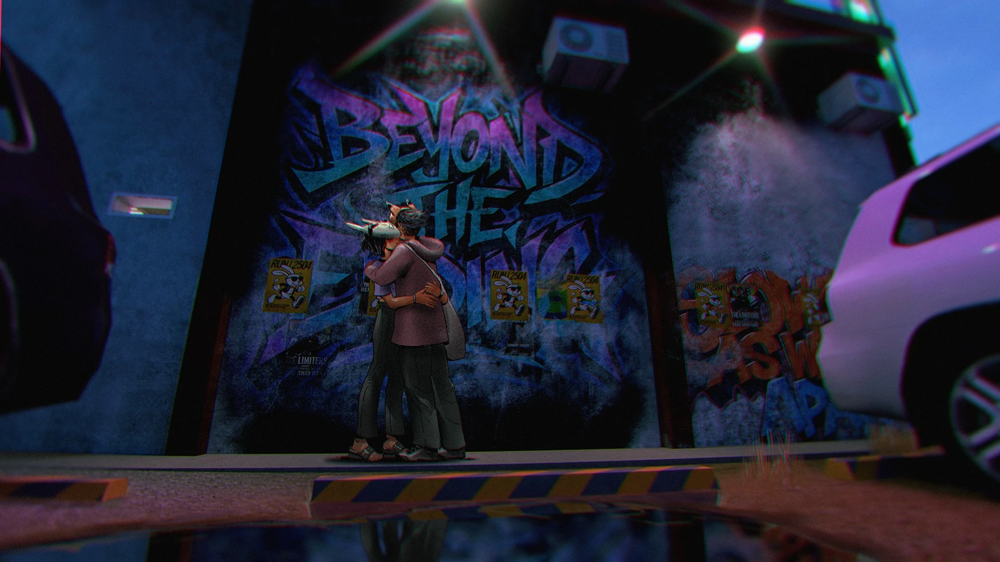
WAYPOINT - The Explorer’s Magazine - Fade Away Hotel Special Edition
Written, illustrated, and animated by Purpo
This publication is purely fictional. All characters, names, groups,
and events depicted are fictional and are not intended to represent
real individuals or organizations. Any resemblance to actual persons,
living or dead, is coincidental.
FADE AWAY EP by Purpo
Music and Lyrics
Purpo
Featured Musicians
Purpo, Jem Blanco, Pablo Pacis, Ren Gamboa, Bong Abantao
Edited by
Gari Custodio